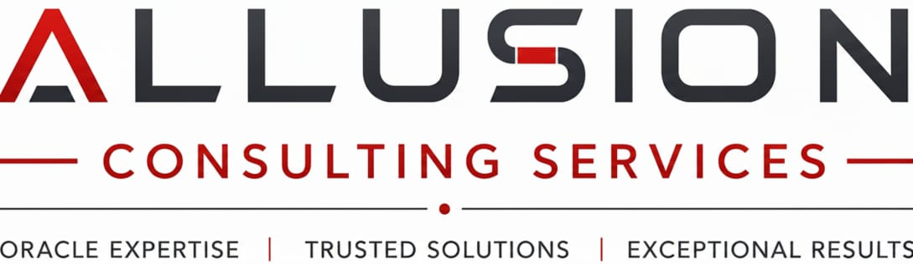

Allusion Consulting Services is a technology consulting practice based in Hyderabad, India, focused on Oracle Database, middleware platforms, and modern data solutions such as graph databases and cloud‑native architectures.
We work with enterprises that depend on stable, high‑performing data platforms for core business operations, helping them modernize environments, improve performance, and reduce operational risk and cost.
We take a hands‑on, engineering‑driven approach to consulting: understanding your workloads, constraints, and compliance requirements, then designing pragmatic solutions that can be implemented step by step.
The practice is led by a platform support engineer with extensive experience administering Oracle databases and Neo4j graph platforms, combined with exposure to banking and financial services environments.
Many consulting providers offer generic services; Allusion focuses on a small set of technologies and industries, providing depth rather than breadth, and combining database, infrastructure, and data‑analytics skills.